InputCalendar의 'calendarValueType' 속성 설정에 따른 입력 필드의 출력 형식과 달력 UI를 비교하는 예제입니다.
속성의 설정 값에 따른 기능은 다음과 같습니다.
yearMonthDate: [default] 입력 필드의 날짜 형식은 'yyyy-MM-dd'이고 달력의 형태는 연도, 월, 일을 선택할 수 있도록 구성됩니다.
yearMonth: 입력 필드의 날짜 형식은 'yyyy-MM'이고 달력의 형태는 연도, 월을 선택할 수 있도록 구성됩니다.
year: 입력 필드의 날짜 형식은 'yyyy'이고 달력의 형태는 연도를 선택할 수 있도록 구성됩니다.
yearMonthDateHour: 입력 필드의 날짜 형식은 'yyyy-MM-dd HH'이고 달력의 형태는 연도, 월, 일, 시를 선택할 수 있도록 구성됩니다.
yearMonthDateTime: 입력 필드의 날짜 형식은 'yyyy-MM-dd HH:mm'이고 달력의 형태는 연도, 월, 일, 시, 분을 선택할 수 있도록 구성됩니다.
yearMonthDateTimeSec: 입력 필드의 날짜 형식은 'yyyy-MM-dd HH:mm:ss'이고 달력의 형태는 연도, 월, 일, 시, 분, 초를 선택할 수 있도록 구성됩니다
'calendarValueType' 속성의 설정 값에 따른 기능 비교하기
1
STEP 1: 초기 상태를 확인합니다.
'calendarValueType' 속성의 설정별 InputCalendar가 구성되어있습니다. 각 InputCalendar의 입력 필드에 출력된 문자열의 형식과 달력 아이콘을 클릭했을 때 표시되는 달력의 형태를 확인합니다.
Image 1.브라우저(Chrome) 실행 예시
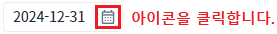
2
STEP 2: 설정 값 'yearMonthDate' 확인하기
입력 필드에 출력되는 날짜 형식은 'yyyy-MM-dd'이고 달력의 형태는 연도, 월, 일을 선택할 수 있도록 구성됩니다.
Image 2.브라우저(Chrome) 실행 예시 - 설정 값 'yearMonthDate'의 입력 필드
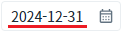
Image 3.브라우저(Chrome) 실행 예시 - 설정 값 'yearMonthDate'의 달력 형태
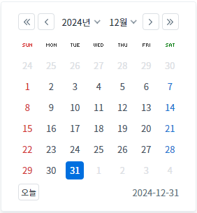
3
STEP 3: 설정 값 'yearMonth' 확인하기
입력 필드에 출력되는 날짜 형식은 'yyyy-MM'이고 달력의 형태는 연도, 월을 선택할 수 있도록 구성됩니다.
Image 4.브라우저(Chrome) 실행 예시 - 설정 값 'yearMonth'의 입력 필드
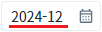
Image 5.브라우저(Chrome) 실행 예시 - 설정 값 'yearMonth'의 달력 형태
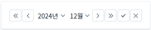
4
STEP 4: 설정 값 'year' 확인하기
입력 필드에 출력되는 날짜 형식은 'yyyy'이고 달력의 형태는 연도를 선택할 수 있도록 구성됩니다.
Image 6.브라우저(Chrome) 실행 예시 - 설정 값 'year'의 입력 필드
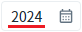
Image 7.브라우저(Chrome) 실행 예시 - 설정 값 'year'의 달력 형태
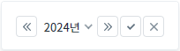
5
STEP 5: 설정 값 'yearMonthDateHour' 확인하기
입력 필드에 출력되는 날짜 형식은 'yyyy-MM-dd HH'이고 달력의 형태는 연도, 월, 일, 시를 선택할 수 있도록 구성됩니다.
Image 8.브라우저(Chrome) 실행 예시 - 설정 값 'yearMonthDateHour'의 입력 필드
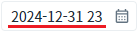
Image 9.브라우저(Chrome) 실행 예시 - 설정 값 'yearMonthDateHour'의 달력 형태
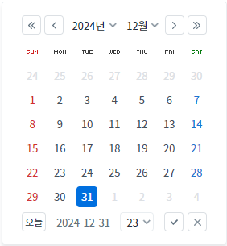
6
STEP 6: 설정 값 'yearMonthDateTime' 확인하기
입력 필드에 출력되는 날짜 형식은 'yyyy-MM-dd HH:mm'이고 달력의 형태는 연도, 월, 일, 시, 분을 선택할 수 있도록 구성됩니다.
Image 10.브라우저(Chrome) 실행 예시 - 설정 값 'yearMonthDateTime'의 입력 필드
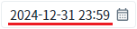
Image 11.브라우저(Chrome) 실행 예시 - 설정 값 'yearMonthDateTime'의 달력 형태
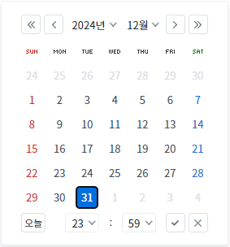
7
STEP 7: 설정 값 'yearMonthDateTimeSec' 확인하기
입력 필드에 출력되는 날짜 형식은 'yyyy-MM-dd HH:mm:ss'이고 달력의 형태는 연도, 월, 일, 시, 분, 초를 선택할 수 있도록 구성됩니다.
Image 12.브라우저(Chrome) 실행 예시 - 설정 값 'yearMonthDateTimeSec'의 입력 필드
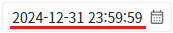
Image 13.브라우저(Chrome) 실행 예시 - 설정 값 'yearMonthDateTimeSec'의 달력 형태
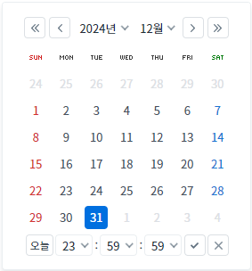
1
InputCalendar의 속성을 정의합니다.
[필수] calendarValueType="옵션 값"
예시) calendarValueType="yearMonthDate"
(옵션 설명)
- yearMonthDate: [default] 입력 필드의 날짜 형식은 'yyyy-MM-dd'이고 달력의 형태는 연도, 월, 일을 선택할 수 있도록 구성됩니다.
- yearMonth: 입력 필드의 날짜 형식은 'yyyy-MM'이고 달력의 형태는 연도, 월을 선택할 수 있도록 구성됩니다.
- year: 입력 필드의 날짜 형식은 'yyyy'이고 달력의 형태는 연도를 선택할 수 있도록 구성됩니다.
- yearMonthDateHour: 입력 필드의 날짜 형식은 'yyyy-MM-dd HH'이고 달력의 형태는 연도, 월, 일, 시를 선택할 수 있도록 구성됩니다.
- yearMonthDateTime: 입력 필드의 날짜 형식은 'yyyy-MM-dd HH:mm'이고 달력의 형태는 연도, 월, 일, 시, 분을 선택할 수 있도록 구성됩니다.
- yearMonthDateTimeSec: 입력 필드의 날짜 형식은 'yyyy-MM-dd HH:mm:ss'이고 달력의 형태는 연도, 월, 일, 시, 분, 초를 선택할 수 있도록 구성됩니다.
Image 14.웹스퀘어 스튜디오의 Component View - 속성 설정 예시
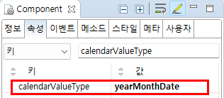
Example 1.Source
<!-- inputCalendar 의 소스 본문 예시 --> <w2:inputCalendar calendarValueType="yearMonthDate"> </w2:inputCalendar>
calendarValueType